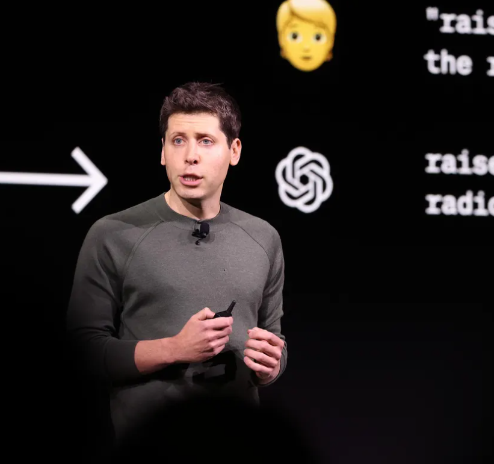

CyberTweet
- home Home
- search Explore
- notifications Notifications
- check_box_outline_blank Grok
- list Lists
- bookmark Bookmarks
- group Communities
- finance_chip Primium
- person Profile
- more More

Vinay
@vinay
more_horiz
Copyright ©, 2025 CyberTweet Corp.
Developed by
Enjoy exploring CyberTweet!
Vinay Mahendre
to demonstrate Tailwind CSS V4 expertise.Enjoy exploring CyberTweet!
For You
Following
settings
public
Everyone can reply
gallery_thumbnail
gif_box
list
sentiment_satisfied
calendar_clock
location_on
Show 250 Posts

SecurityX
verified@securityx - 2h
Biggest CyberAttack in the World...Exploited By Hacker Group... more
chat_bubble
900K
cached
23.4K
favorite
1.21M
bar_chart
300.1K
bookmark
publish
Hacker BlueSpy
verified@hackerbluespy - 5h
Phones Of Indian Politicians, Journalists Hacked Using Pegasus Spyware... more
chat_bubble
991K
cached
2.4K
favorite
11.21M
bar_chart
878.1K
bookmark
publish
Vinay Mahendre
verified@vinaymahendre - 22h
Alleged OpenAI Data Breach: 20 Million Accounts for Sale... more

chat_bubble
1M
cached
13.4K
favorite
8.29k
bar_chart
30.11K
bookmark
publish
What's Happening
Trending in India
Biggest CyberAttack in the World

90.2K Posts
Cyber-Trending
more_horiz
#CyberAttack
500k Posts
Trending in USA
more_horiz
#MalwareAttackInUSA
250.1k Posts
Trending in Russia
more_horiz
#PegasusSpyware
1.21M Posts
Show More
Who to Follow
Vinay Mahendre
@vinaymahendre
Hacker BlueSpy
@hackerbluespy
SecurityX
@securityx
arrow_drop_down